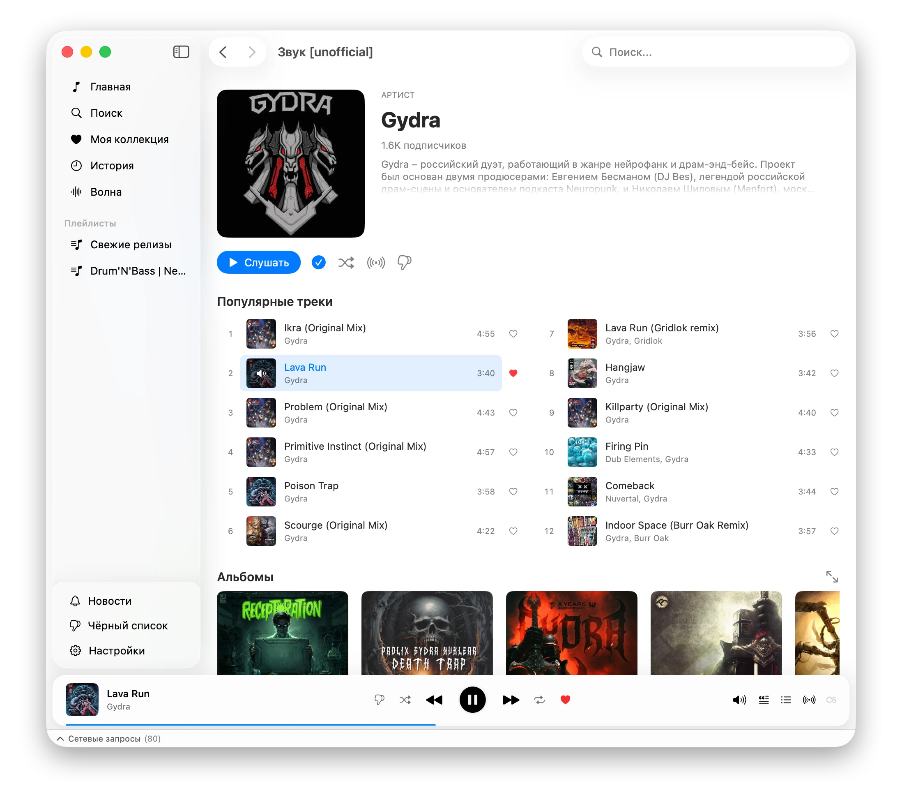

Неофициальный десктопный клиент Zvuk.com для macOS. Волна, Last.fm, тексты песен, история — всё в одном лёгком приложении.

Простой, быстрый и нативный — без Electron, без рекламы, без лишнего.
Полный каталог Zvuk с обложками, треклистами и связанными релизами.
Бесконечное радио по настроению с автоматической подгрузкой треков.
Один клик — и поток похожей музыки на основе любого трека.
Быстрый поиск по артистам, релизам, плейлистам и подкастам.
Локальная история всего, что вы слушали в приложении, с быстрой навигацией.
Now Playing, scrobble и синхронизация лайков с библиотекой Last.fm.
Синхронизированные тексты прямо в окне плеера, без лишних кликов.
Новинки, хиты, жанры и подборки редакции прямо на главном экране.
Готовая сборка для macOS — никаких зависимостей и компиляции.
Приложение не подписано Apple Developer ID, поэтому Gatekeeper может его заблокировать. Нажмите правой кнопкой → Открыть. Если не помогло, выполните в Терминале:
sudo xattr -r -c /Applications/Звук\ \[unofficial\].app